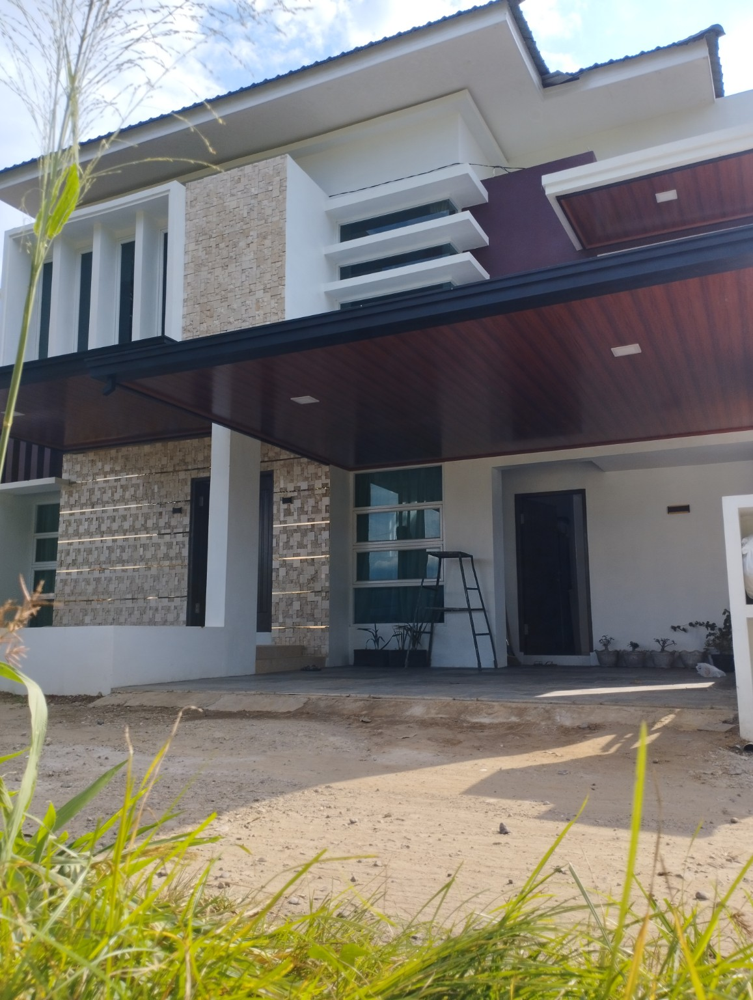
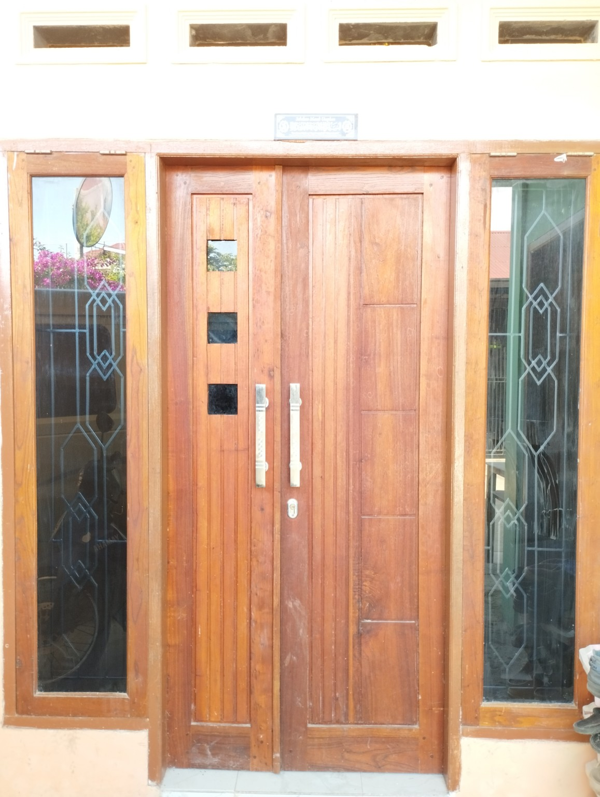
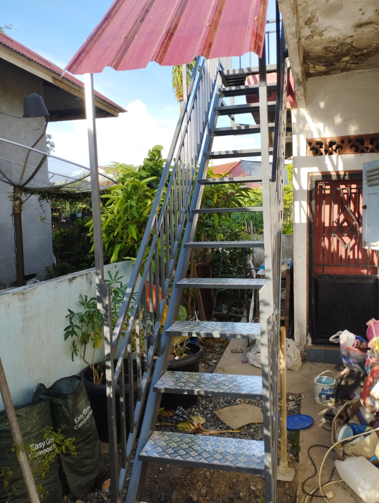
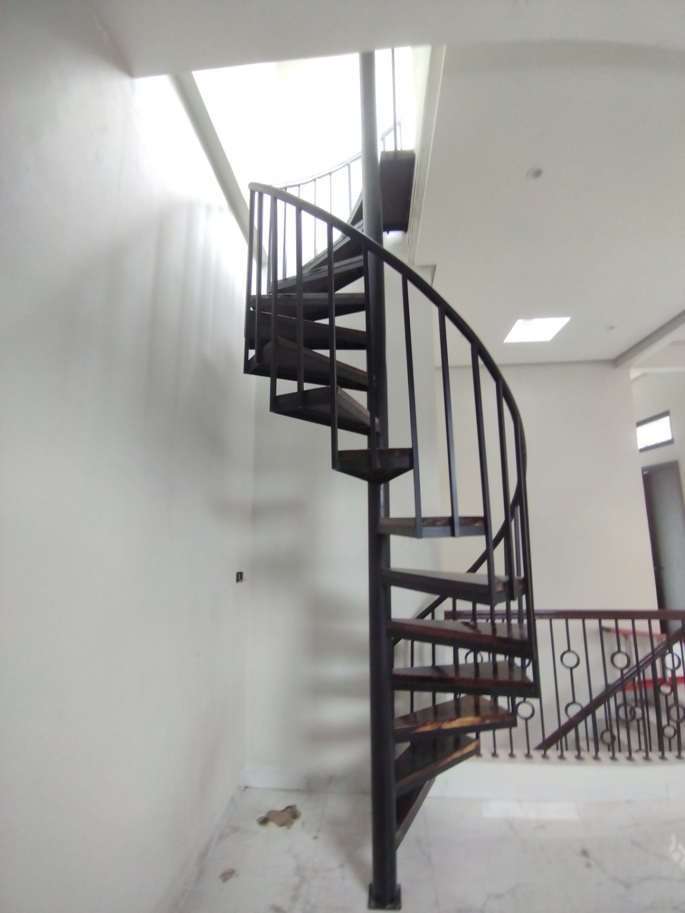
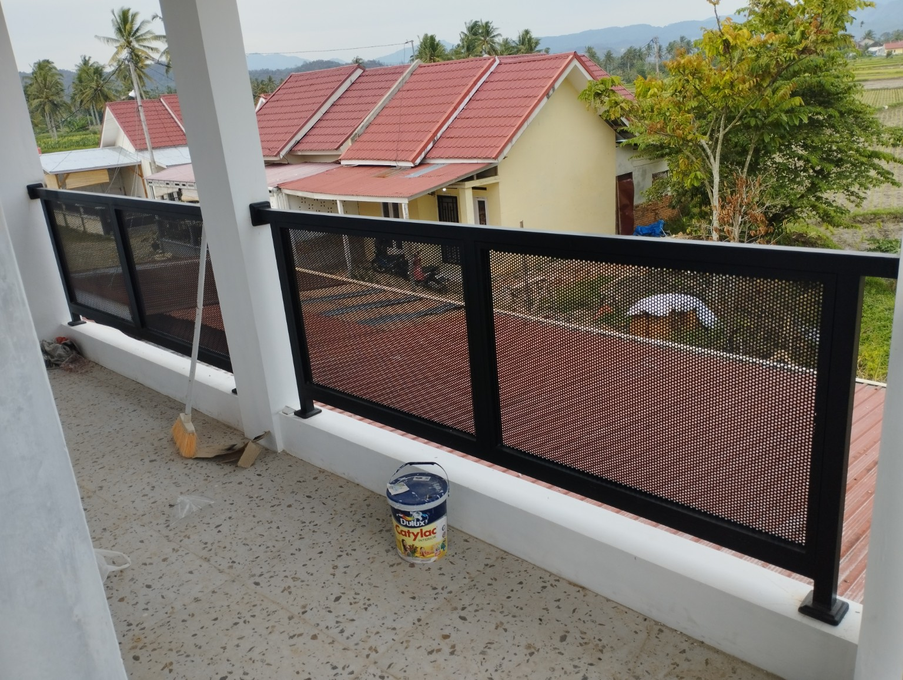
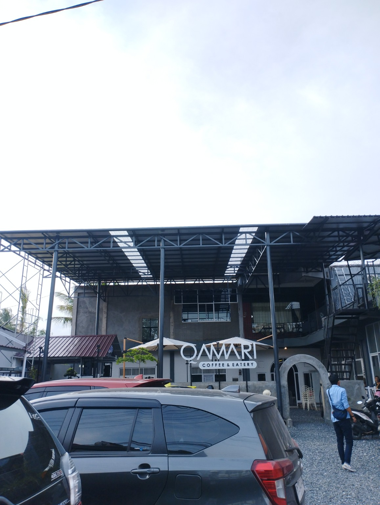
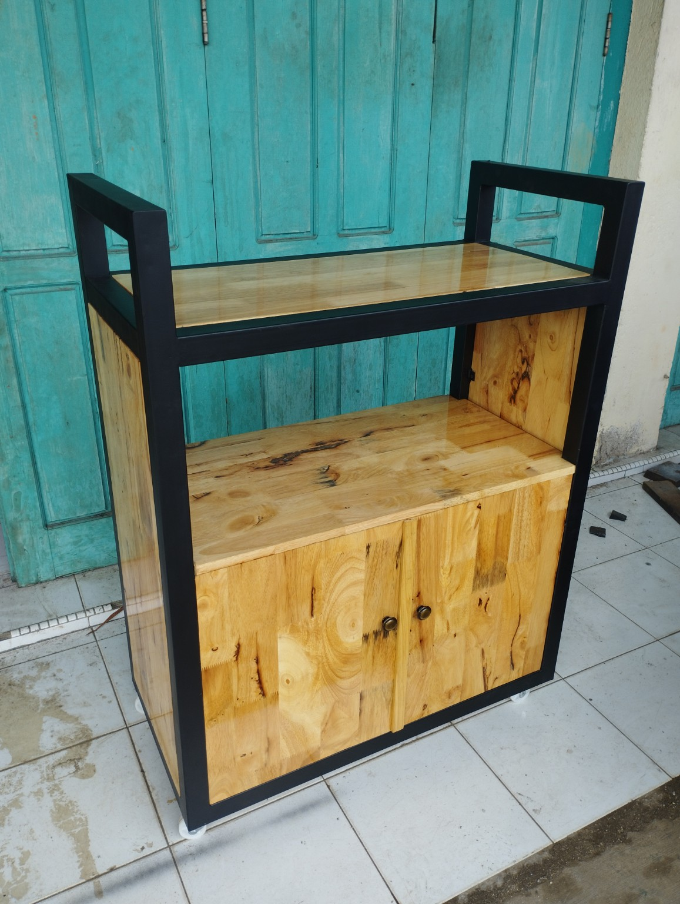
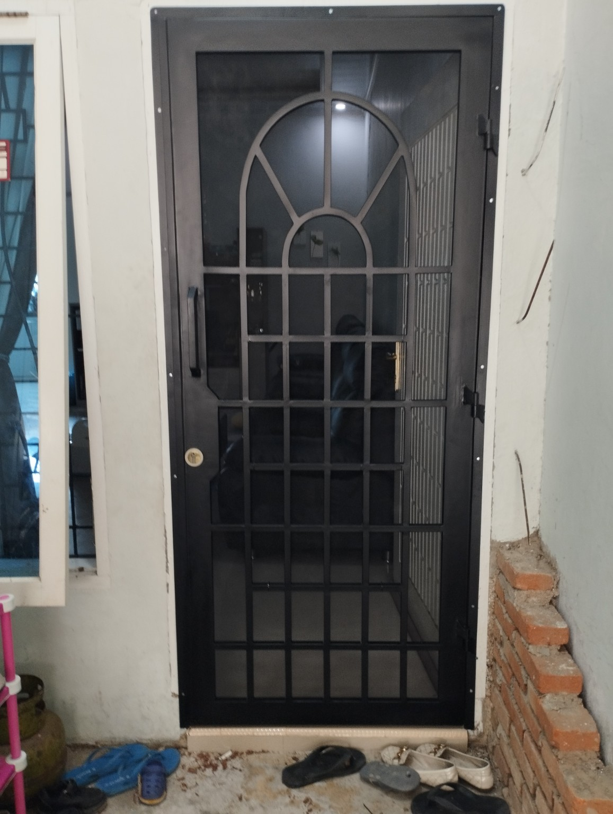
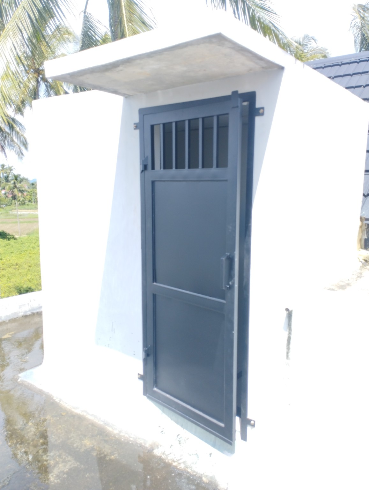

Pintu & Teralis
Pintu besi, teralis jendela dan kebutuhan keamanan rumah.
ARUMBA Konstruksi & Manufaktur melayani kebutuhan konstruksi besi, manufaktur dan custom dengan hasil kuat, rapi dan tahan lama.
Chat WhatsApp Lihat Portofolio
Dikerjakan custom sesuai ukuran dan kebutuhan.
Pintu besi, teralis jendela dan kebutuhan keamanan rumah.
Tangga interior maupun eksterior yang kuat dan aman.
Pagar dan railing balkon dengan desain modern.
Kanopi besi maupun baja ringan untuk rumah dan kendaraan.
Rak, meja kasir dan furniture custom.
Rangka bangunan dan pekerjaan struktur besi lainnya.








Kami mengutamakan kekuatan konstruksi, kerapian hasil dan ketepatan pengerjaan. Desain dapat disesuaikan dengan ukuran serta kebutuhan pelanggan.

Kirim ukuran, foto lokasi atau contoh desain melalui WhatsApp.